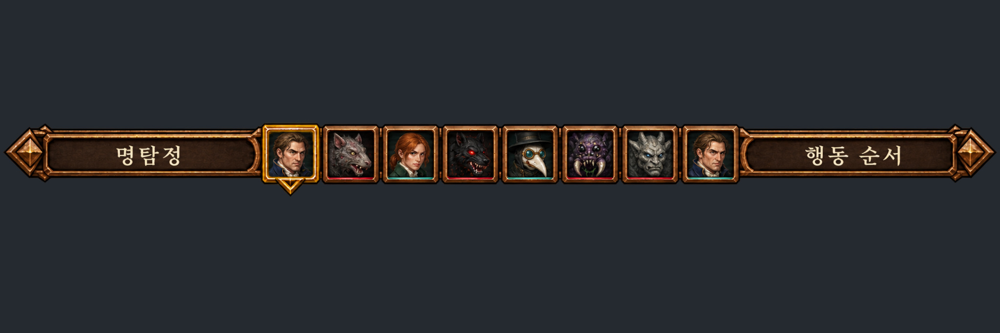

→ 색 기준: 짙은 갈색 나무 + 청동/구리 테두리. 지금 게임 곳곳의 검은 보라·남색 바탕, 보라 띠, 납작한 노란 금색 선은 디자인 전에 개발이 임시로 넣은 색.
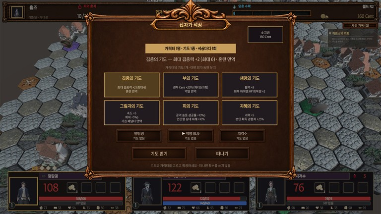

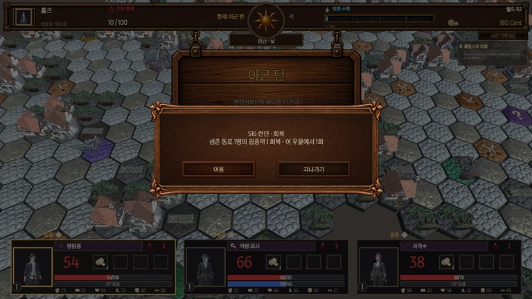
그 밖에: 설정·메뉴·사건 기록·점술·우물·상점·인벤토리 바깥 틀, 모든 버튼, 승리·패배·1막 클리어 표지판, 아이콘 Z01~Z44, 점술마녀·제임스 초상.
| # | 어디 | 지금 모양 | 처리 |
|---|---|---|---|
| 1 | 파티 카드 (판·전투 아래 3장) | 남색 바탕 · 보라 이름 띠 · 납작한 금색 선. 화면에 늘 떠 있어 가장 눈에 띔 | 개발 — 사각 판 그림 + 이름 띠 갈색 |
| 2 | 대화 창 + 말하는 사람 칸 | 회색 상자, 회색 선 | 개발 — 사각 판(또는 창 틀) |
| 3 | 조우 창 (적 정보·기습 확률) | 보라 마름모 “소형” · 보라 제목 띠 · 남색 판 3개 | 개발 — 판 3개 사각 판, 마름모·띠 갈색/청동 |
| 4 | 전투 적 HP 카드 | 검은 판 + 금색 선 | 개발 — 사각 판 |
| 5 | 전투 행동 막대 · 스킬 · 소모품 창 | 검은 판 + 금색 선 (소모품 창은 큰 빈 검은 상자) | 개발 — 사각 판 |
| 6 | 보스 예고 설명 상자 · 예고 띠 | 적갈색 판 + 금색 선 / 검은 띠 | 개발 — 사각 판 |
| 7 | 창 안쪽 칸·목록 (상점·인벤토리·사건 기록·점술 카드·소지금 칸·이름 입력칸) | 남색 칸 + 금색 선, 목록 줄 회색 | 개발 — 안쪽 판 사각 판, 줄 색 갈색 |
| 8 | 오른쪽 의뢰 상자 · 왼쪽 도움말 상자 | 회색 반투명 상자 | 개발 — 사각 판(반투명) |
| 9 | 메인 메뉴 · 파티 구성 화면 | 바탕이 그냥 검은 남색, 제목 글자만, 카드 남색 | 개발: 카드·색 |
| 10 | 상태 표시 칩 (출혈 등) | 보라 칩 | 개발 — 갈색/청동 |
| 11 | 보스 등장 띠 (“1막 보스 검시관 아벨 모로”) | 검은 반투명 띠 | 개발 — 턴 안내판처럼 표지판 그림 재사용 가능 |
| 12 | 점술 창 “참가비” 띠 | 밝은 노란 직사각형 (튐) | 개발 — 이름 칸 색 맞춤 |
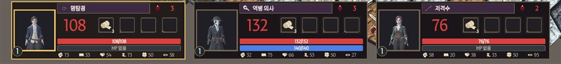
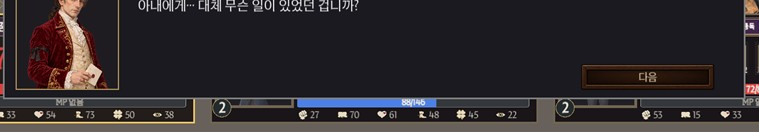
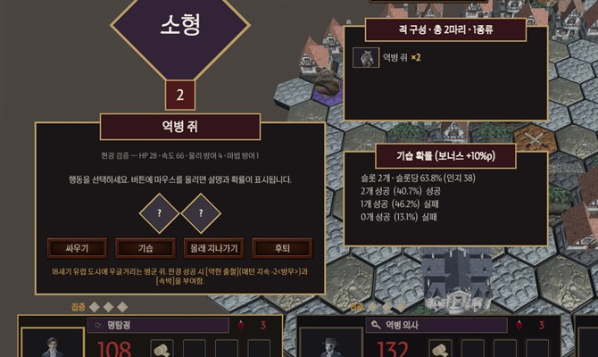

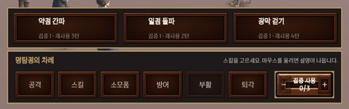
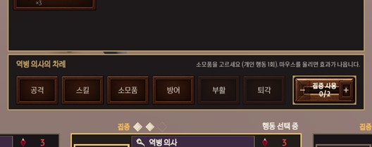
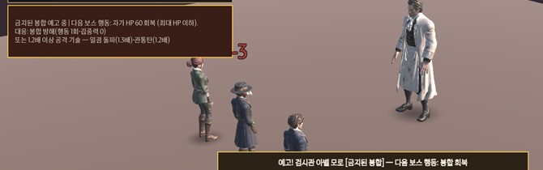
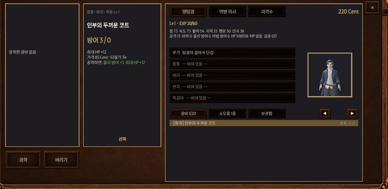
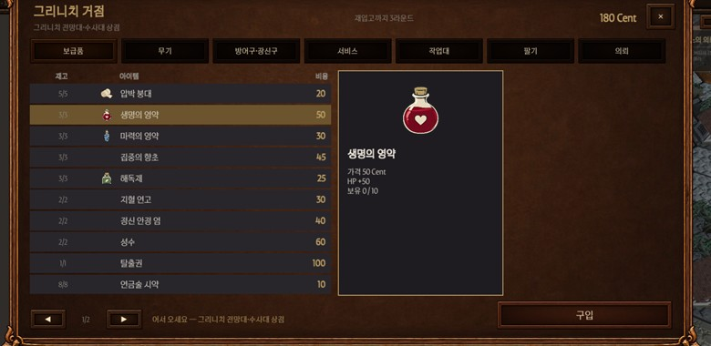
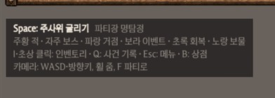
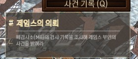
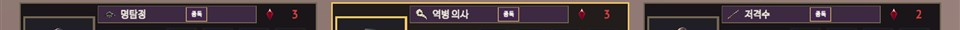
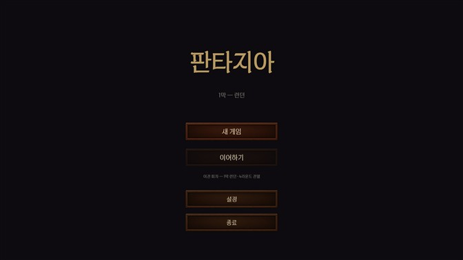
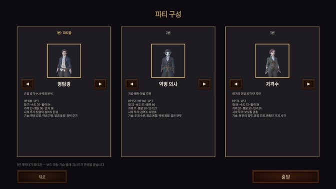
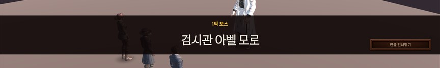
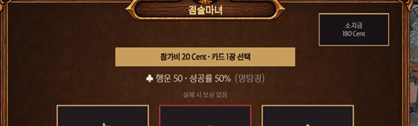
| # | 무엇 | 처리 |
|---|---|---|
| C1 | 전투 시작 전(보스 대화 중) 순서 띠 바탕만 빈 채로 보임 — 새 그림이라 빈 띠가 눈에 띔 | 순서가 정해지기 전에는 띠도 숨김 |
| C2 | 판에서 주사위(3D)가 “아군 턴” 안내판 위로 겹쳐 굴러감 (피의 사냥 중) | 안내판이 내려가 있는 동안 굴림 대기 |
| C3 | 보스 저지 성공 “저지!” 글자가 순서 띠 위에 겹침 | 글자 위치를 띠 아래로 |
| C4 | 상점·인벤토리 창 위 장식이 상단 바를 덮음 (창이 화면 위 끝까지 큼) | 창 위 끝을 조금 내림 |
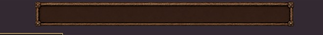
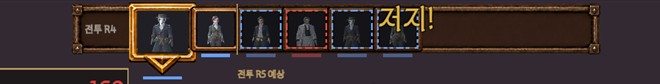
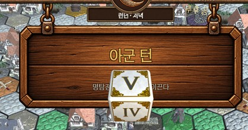
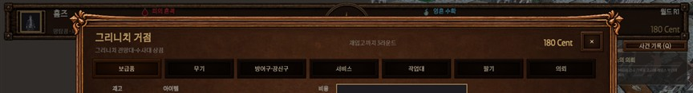
| # | 무엇 | 지금 | 필요한 그림 |
|---|---|---|---|
| D1 | 메인 메뉴 배경 · 제목(로고) | 검은 바탕 + 글꼴 글자 “판타지아” | 배경 그림 1장(16:9) + 로고 PNG (선택) |
| D2 | 분수대 · 석상 이벤트 그림 | 점술마녀만 왼쪽에 그림, 분수대·석상은 빈자리 | 3:4 그림 2장 (배경 투명) |
| D3 | 아벨 모로 3:4 초상 | 예전 어두운 배경 2:3 | 요청서 7-1과 같음 |
| D4 | 파티 카드 전용 틀 (선택) | 개발이 사각 판으로 대신할 예정 | 있으면 교체 (없어도 됨) |
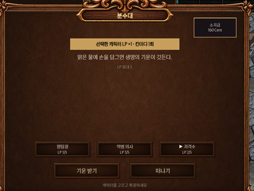
기획서에 없는 새 연출은 없음 — 받은 그림·색을 맞추는 일. 11/12 그림 마감과 상관없이 받은 그림 안에서 처리. 사진 원본: 자동 플레이 결과 (allui).